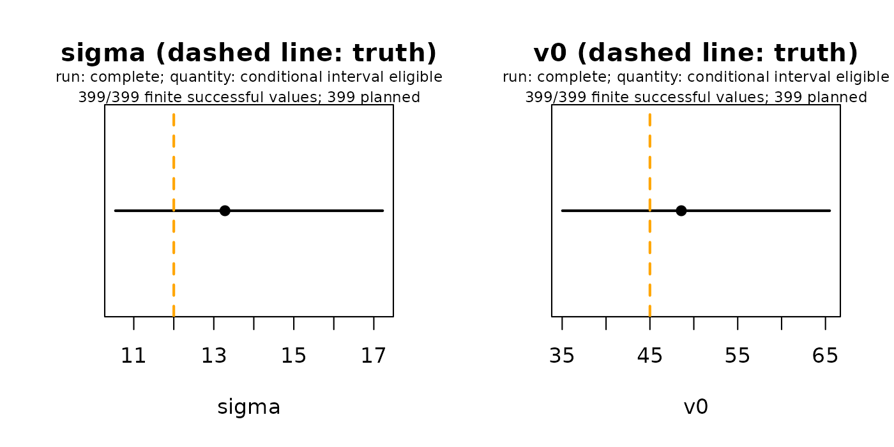

Bootstrap intervals for a fitted allocation model
Source:vignettes/facility-bootstrap.Rmd
facility-bootstrap.RmdThis guide uses generated data instead of the Cornwall GP data described in The Cornwall GP example data, for the reasons below.
bootstrap_allocation() adds conditional bootstrap
intervals to a fitted static allocation model. It resamples facility
totals, refits the model to each resample and reports percentile
intervals for the parameters and for derived quantities, including a
paired supply scenario. The interface is experimental.
Why generated data
The bootstrap is shown on a generated network, not on Cornwall, for three reasons. Its eligibility rule (all 399 attempts made and at least 380 finite successful values) was validated on generated designs of this size. A known truth lets you see whether the intervals cover it. And the method resamples facility totals treated as independent counts in one period, whereas Cornwall registrations are a stock of who is registered where; that observation law would need its own justification before an interval could be read. The allocation workflow fits, checks and predicts the same kind of model on the Cornwall registrations.
A generated network with a known truth
The generated network has 80 origins and 40 facilities. Facility totals are drawn independently from a Poisson law with σ = 12 and v0 = 45. Independence across facilities is an assumption declared below; it does not follow from mutually exclusive destinations. The model is prepared, declared and fitted as in the allocation workflow.
units <- list(
demand_units = "requests",
demand_period = "one_reference_period",
supply_units = "service_slots",
supply_period = "one_reference_period",
travel_units = "minutes"
)
# Travel minutes between 80 origins and 40 facilities on a wavy strip
i <- seq_len(80)
j <- seq_len(40)
boot_travel <- sqrt(
outer(seq(2, 58, length.out = 80), seq(4, 56, length.out = 40), "-")^2 +
outer(8 * sin(i * .73), 7 * sin(j * 1.31), "-")^2) + 2
dimnames(boot_travel) <- list(paste0("origin", i), paste0("facility", j))
# Demand at each origin and supply at each facility
boot_demand <- setNames(80 + 35 * (1 + sin(i * .23)), rownames(boot_travel))
boot_supply <- setNames(rep(c(5, 7, 6, 8, 9), 8), colnames(boot_travel))
# True choice probabilities under the static CLM
truth <- c(sigma = 12, v0 = 45)
boot_score <- exp(-boot_travel^2 / (2 * truth[["sigma"]]^2)) *
rep(boot_supply, each = length(boot_demand))
boot_probability <- boot_score / (rowSums(boot_score) + truth[["v0"]])
# Observed facility totals: independent Poisson counts around the truth
set.seed(2490001)
boot_observed <- setNames(
rpois(40, colSums(boot_probability * boot_demand)),
names(boot_supply)
)
# Prepare, declare and fit, as for Cornwall
boot_inputs <- prepare_allocation(
demand = boot_demand,
supply = boot_supply,
distance = boot_travel,
metadata = units
)
boot_model <- clm_allocation(boot_inputs, family = "gaussian", fit_v0 = TRUE)
boot_starts <- rbind(
short = c(sigma = 8, v0 = 25),
medium = c(sigma = 15, v0 = 70),
wide = c(sigma = 25, v0 = 15)
)
boot_fit <- fit_allocation(
model = boot_model,
observed = boot_observed,
starts = boot_starts,
lower = c(sigma = 2, v0 = 1),
upper = c(sigma = 60, v0 = 500),
output = "utilization", # facility totals
loss = "poisson",
gradient = TRUE,
control = list(maxit = 300, factr = 10, pgtol = 1e-8)
)
rbind(truth = truth, estimate = coef(boot_fit)) sigma v0
truth 12.00000 45.00000
estimate 13.27962 48.57499The target here is facility totals
(output = "utilization"), the observation unit the
bootstrap resamples. The estimates differ from the truth because the 40
totals are one random sample; the bootstrap describes how much they
could vary.
Declare the observation and a paired scenario
The bootstrap needs an explicit declaration of what was observed, over what period and how facilities were sampled. The paired scenario raises the second facility’s supply by 20%; each bootstrap draw evaluates baseline and scenario at the same parameters.
# Scenario: 20% more supply at facility2
boot_scenario_supply <- boot_supply
boot_scenario_supply["facility2"] <- 1.2 * boot_scenario_supply["facility2"]
boot_scenario_inputs <- prepare_allocation(
demand = boot_demand,
supply = boot_scenario_supply,
distance = boot_travel,
metadata = units
)
boot_scenario <- clm_allocation(
inputs = boot_scenario_inputs,
family = "gaussian",
fit_v0 = TRUE
)
# What was observed, over what period, and how facilities were sampled
observation <- list(
event = "allocated service requests",
period = "one_reference_period",
sampling = "independent_facilities"
)
# Run the bootstrap only when rebuilding the stored result (see below)
rebuild_boot <- identical(Sys.getenv("SPAX_REBUILD_VIGNETTE_BOOTSTRAP"), "true")Run the bootstrap
boot <- bootstrap_allocation(
model = boot_model,
fit = boot_fit,
observation = observation,
scenario = boot_scenario,
seed = 20260930
)The stored result
The chunk above is the exact call, but its 399 attempts take about
three minutes, so it is not run while this guide is built. Its
unmodified result is stored in allocation-bootstrap.rds,
regenerated by data-raw/precompute-vignette-bootstrap.R,
which renders this guide with
SPAX_REBUILD_VIGNETTE_BOOTSTRAP=true so that the chunk runs
live and saves its result. Nothing is subsampled or summarized; run the
chunk yourself to reproduce it. The checks below confirm that the stored
result matches the inputs and fit computed live here and that all 399
attempts were made.
# When rebuilding, store the fresh result with the spax version used
boot_file <- "allocation-bootstrap.rds"
if (rebuild_boot) {
attr(boot, "spax_version") <- as.character(packageVersion("spax"))
saveRDS(boot, boot_file, compress = "xz")
}
boot <- readRDS(boot_file)
# The stored result belongs to these inputs, this fit and all 399 attempts
stopifnot(
inherits(boot, "ae_allocation_bootstrap"),
boot$seed == 20260930L,
boot$planned == 399L,
boot$attempted == 399L,
identical(boot$facility_ids, names(boot_supply)),
identical(boot$observation, observation),
identical(boot$input_metadata, units),
isTRUE(all.equal(boot$original$theta, coef(boot_fit), tolerance = 1e-6))
)
c(
status = boot$status,
attempted = boot$attempted,
successful = boot$successful,
built_with_spax = attr(boot, "spax_version"),
running_spax = as.character(packageVersion("spax"))
) status attempted successful built_with_spax running_spax
"complete" "399" "399" "0.3.0.9000" "0.3.1" Read the intervals
parameters <- c("sigma", "v0")
# Point estimates and intervals for the two parameters
estimates <- as.data.frame(boot)
filter(estimates, quantity %in% parameters) quantity estimate lower upper status
1 sigma 13.27962 10.54105 17.22121 conditional_pointwise_bootstrap
2 v0 48.57499 35.02844 65.47782 conditional_pointwise_bootstrap
successful attempted planned
1 399 399 399
2 399 399 399
# The first few of the 399 attempts
draws <- as.data.frame(boot, type = "draws")
draws |>
select(attempt, status, all_of(parameters)) |>
head() attempt status sigma v0
1 1 selected 12.86513 48.73043
2 2 selected 13.21244 50.51980
3 3 selected 12.14213 40.43821
4 4 selected 12.43516 42.49470
5 5 selected 12.10434 43.16452
6 6 selected 14.70454 53.31157The procedure makes 399 predetermined attempts. It resamples facility observations while keeping every facility and its supply in the allocation. Failed attempts are kept and not replaced, and successful fits on an inner boundary stay in the distribution. An interval is reported only when all 399 attempts were made, at least 380 values are finite and the original fit is eligible; otherwise the result keeps its point estimates and reasons but withholds intervals.
The tables above show the two model parameters; the saved result also
holds regional and paired-scenario quantities, listed by
as.data.frame(boot).
Check against the truth
The generated data have a known truth, so the intervals can be set beside it.
# Two panels side by side; each adds the true value as a dashed line
oldpar <- par(mfrow = c(1, 2))
for (q in c("sigma", "v0")) {
plot(boot, quantity = q, main = paste(q, "(dashed line: truth)"))
abline(v = truth[[q]], col = "orange", lwd = 2, lty = 2)
}
par(oldpar)In this generated design both intervals contain the true values (dashed). They are pointwise percentile intervals conditional on the declared observation law and on fixed demand, supply, travel and facilities. Acceptance in generated studies does not establish an application’s observation law or guarantee exact 95% coverage, and the paired scenario is model-based, not causal.
Tables and saving
The result works with the same tools as a fit.
as.data.frame() returns the saved estimates and intervals,
every attempted draw (type = "draws") or every attempted
start (type = "starts"), failures included;
summary() and plot() read the saved values
without resampling. Save the whole object as RDS to keep its
declarations; CSV tables drop them. The allocation workflow shows a full
export and a reload in a fresh R session.
# Save the result and read it back
saved <- tempfile(fileext = ".rds")
saveRDS(boot, saved)
restored <- readRDS(saved)
# The restored result gives the same tables, with nothing recomputed
stopifnot(
identical(as.data.frame(restored), as.data.frame(boot)),
identical(
as.data.frame(restored, type = "draws"),
as.data.frame(boot, type = "draws")
),
inherits(summary(restored), "summary.ae_allocation_bootstrap")
)
unlink(saved)